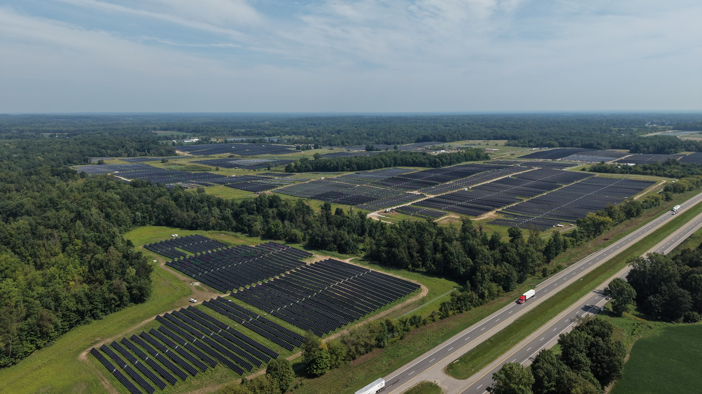

TVANT + GREENSOL
Project Progress
Supervision progress, documentary coverage and Daily Report history.

Each test is measured against its defined scope.
IV curve testing has not started because the minimum project-required irradiance has not been met.
| Activity | Complete | Scope | % |
|---|
Completed progress for the selected scope.
| Activity | Pending | Unit |
|---|
Detailed equipment-level status will be updated from TVANT SUPERVISOR V2.
| Type | Value |
|---|
Overview for the selected circuit, inverter or zone.
Based on published Daily Reports. New authorized exports will be added to the history.
Site coordinates: 42.202401, -86.031801 · Michigan local time (America/Detroit). Daily forecast by Open-Meteo; interactive weather map by Windy.
Forecasts are estimates and may change. Weather information does not affect commissioning acceptance or inspection records.
Each new TUW Daily replaces the current report. Earlier reports remain available in the archive.